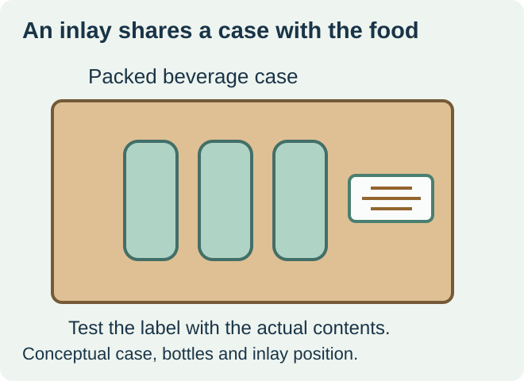
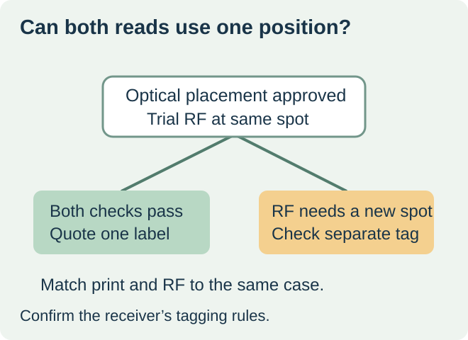

Combine the inlay and printed case label when the same position meets both the optical and radio-frequency requirements on a filled case. If the optical position is fixed and the RFID test requires another location, ask whether the receiver accepts a separate tag. For a receiver that uses only printed marks, quote the optical label to the approved requirements.


GS1 US’s foodservice implementation guideline discusses an inlay embedded in a printed case label and reasons to attach the RFID tag separately. Use the program’s requirements and test procedure to choose a location. The guideline describes a foodservice implementation, and individual receivers can have their own acceptance conditions. GS1 US foodservice RFID guideline, section 5
Start with the packed case and the read event
Record what is inside the case, how the units are arranged, where the case travels, and whether the receiver reads a single case or a stacked load. Section 5 of the foodservice guide highlights liquid contents, reader direction and adjacent tags. Compare the proposed position on the actual filled case, since an empty-carton demonstration excludes the contents and stacking arrangement.
| Evidence from the actual receiving setup | Quote route | Acceptance evidence |
|---|---|---|
| Approved optical location also passes the radio read test | Combined printed label and inlay | One representative construction and the agreed placement |
| Optical mark must stay on one face but RF tests support another position | Receiver-approved separate optical label and RF tag | Both placements, correct identity pairing and a completed read test |
| RF result comes from an empty case or a different load | Hold the inlay position decision | Representative filled cases in the relevant orientation and load |


Test placement separately from the data pairing
Have the receiver or its testing partner specify the case variants and read conditions. On the proposed combined label, check the optical mark from its intended scan direction and the RF response from the relevant load. A two-face printed wrap can repeat visible information. Confirm the receiver’s inlay count and position for the case separately from how many faces carry print.
For a separate tag, define which step prints the optical label, which step attaches and encodes the tag, and how both are checked against the actual case. Agree how to handle a failed or replaced tag so the old identifier does not remain in use. A reliable radio read confirms a detectable tag. Verify the identity carried by that tag against the printed case and production record.
Request a quote with named responsibilities
Compare the same delivered case and receiver requirement. List the printed label stock, proposed inlay and approved position, encoding or verification, both application steps if used, and the trial evidence each supplier will deliver. Reconfirm the placement if case contents, packing pattern, or the inlay changes. Bring unresolved RF selection and encoding to a specialist. ZFU’s food label inquiry can address the separate printed label specification.
Discuss the unresolved label requirement
For the printed case label, send the receiver’s artwork and data requirements, case and packed-product photos, the approved placement, surface and handling conditions, and the order quantity. Ask the RFID specialist to specify any inlay, encoding and test requirements separately. Review food label options and prepare a label specification inquiry. The contact page opens an email draft and lists email or WhatsApp for attachments. Supply, proof options, testing, pricing and timing require project confirmation.